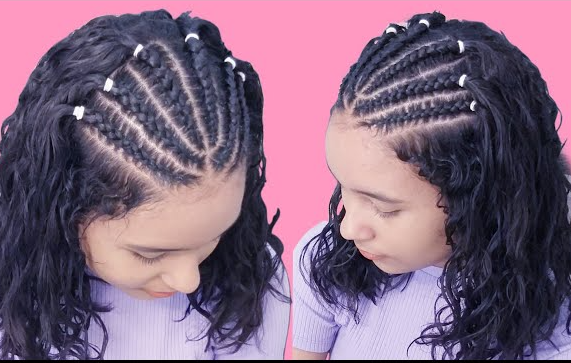
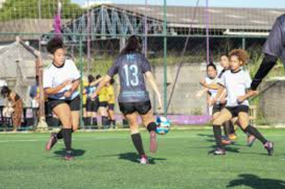
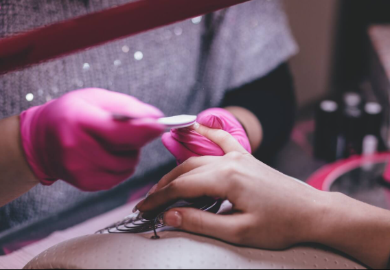

Meus projetos

AthleTogether – Esporte e Inglês
Na Eletiva AthleTogether, você vai conhecer esportes de cinco continentes onde o inglês é falado:
- Américas: basquete (EUA) e hóquei (Canadá)
- Europa: futebol (Inglaterra) e boxe (Irlanda do Norte)
- África: atletismo (África do Sul e Quênia)

Robótica Pedagógica com Arduino
Aula de prototipagem durante o Projeto de automação e programação com Arduino, focado em sustentabilidade e reciclagem para o Ensino Médio, ministrado pela UFABC.

Prototipagem na aula de Robótica
A aula marca a transição da teoria para a prática com foco em cultura maker e prototipagem mecânica. Os alunos relembram conceitos históricos e técnicos sobre a evolução dos teares.